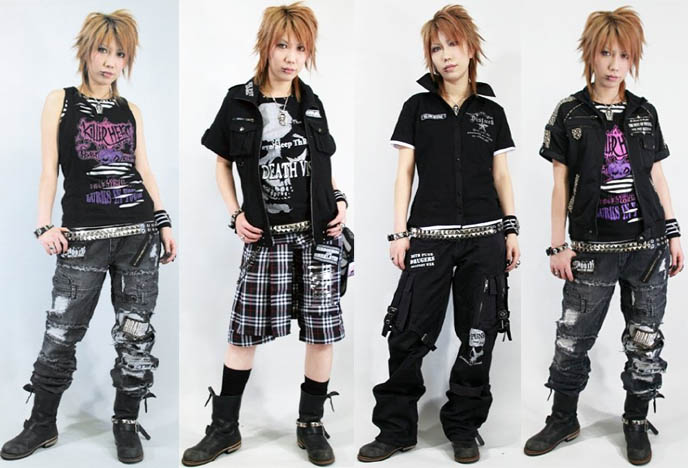

Place To Shop
Takeshita Dori
This image is by:LOLITADress found on lolitadress.co.uk/discount-sleeveless-cross-straps-bowknot-cotton-black-and-white-gothic-lolita-dress-p-4318.html
This image is by:LA CARMINA found on lacarmina.com/blog/2008/07/sex-pot/revenge-harujuku-japan-male-punk-fashion-photos/1346728578000/

Takeshita Dori is aka Harujuku. The famous shopping district near Shinjuku. Selling male and female clothes that are trending in Japan.
Hakone Store
This image is by: Shadowgate at OtsukaGofukuten kimono store by Yusuke Seki. Found on commons.wikimedia.org/wiki/File:Kimonorecycleshop-asakusa01.jpg
Hakone store sell traditional clothes. The kimono and yukata is for female.Hoari and Montsuki is for male.They are worn only on special occasion.
Studio Gift Shop
This image is by:sofich on redbubble.com/people/sofich/works/20993495-studio-ghivli-gang?p=t-shirt&style=men&body_color=cranberry&print_location=front
You can buy movie character plush from here. Also can buy t-shirt and probably stationery.